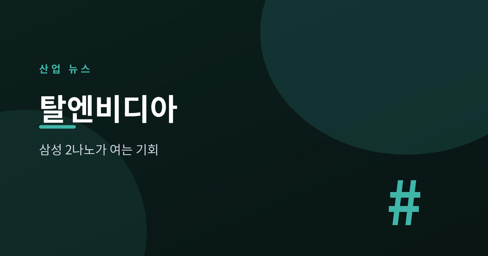
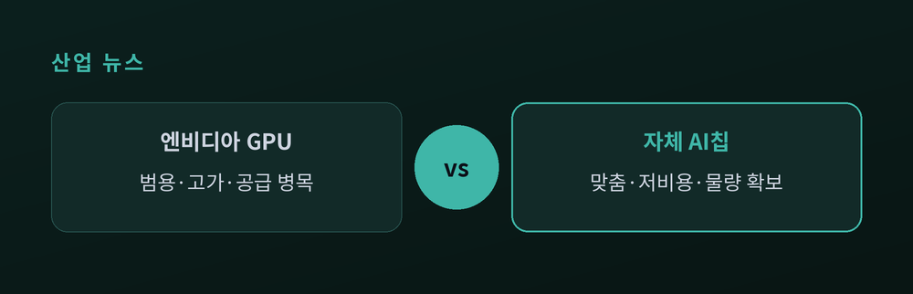
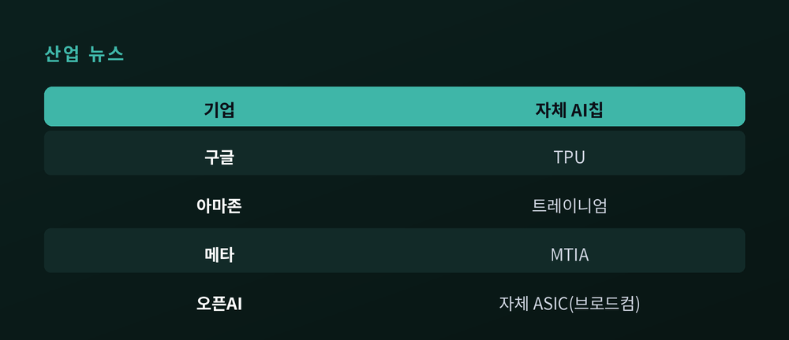
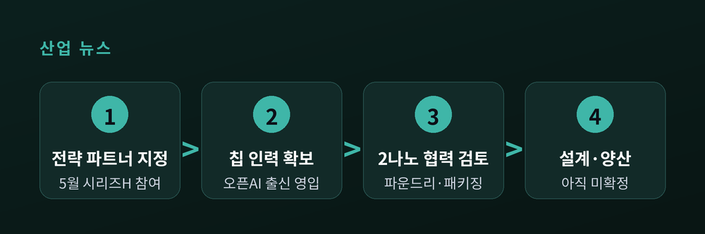
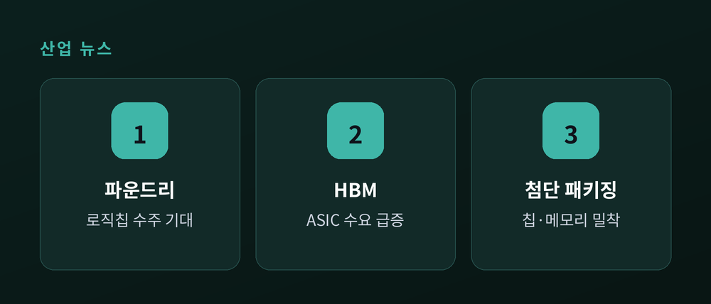

앤트로픽·삼성 2나노 협력이 던진 신호

이번 글에서는 2026년 7월 초에 나온 한 보도를 짚어보겠습니다. 앤트로픽이 자체 AI 칩을 만들기 위해 삼성전자 파운드리와 협력을 검토한다는 소식입니다. 빅테크의 '탈엔비디아' 흐름 안에서 이 사안이 무엇을 뜻하는지, 그리고 삼성전자와 SK하이닉스에는 어떤 의미인지 차분히 정리합니다.
미국 IT 매체 더인포메이션은 앤트로픽이 자체 AI 칩 개발 초기 프로젝트를 진행하면서 삼성전자와 제조 협력 방안을 검토하고 있다고 전했습니다. 국내외 여러 매체가 이를 인용 보도했습니다.
논의의 핵심은 삼성의 2나노 공정과 첨단 패키징 기술입니다. 2나노는 삼성 내부 명칭으로 SF2 공정이며, 트랜지스터 구조를 핀펫에서 GAA(게이트올어라운드) 나노시트로 바꾼 차세대 세대입니다. 같은 면적에 더 많은 소자를 담아 성능과 전력 효율을 끌어올리는 것이 목표입니다.
다만 지금 단계를 과장해서는 안 됩니다. 앤트로픽은 칩의 성능도, 용도도, 서버에 어떻게 넣을지도 아직 정하지 않았다고 전해집니다. 상세 설계나 시제품, 양산까지는 가지 않은 초기 탐색 단계입니다. 앤트로픽이 6월 초 오픈AI 칩 팀 출신 엔지니어를 영입했다는 점 정도가, 이 회사가 하드웨어에 손을 대기 시작했다는 신호로 읽힙니다.

앤트로픽만의 이야기가 아닙니다. 지금 AI 업계 전체가 엔비디아 한 곳에 기대는 구조에서 벗어나려 움직이고 있습니다.
엔비디아는 여전히 AI 칩 시장의 약 70%를 쥐고 있습니다. 그러나 구글은 TPU를, 아마존은 트레이니엄을, 메타는 MTIA를 각각 만들어 왔습니다. 오픈AI도 브로드컴과 손잡고 2026년부터 자체 ASIC 개발에 들어갑니다. 이유는 분명합니다. 엔비디아 의존을 줄이고, 추론 비용을 낮추고, 자사 작업에 꼭 맞는 칩으로 협상력을 확보하려는 것입니다.
효과를 보여주는 수치도 있습니다. 구글은 자사 TPU가 비교 가능한 엔비디아 구성 대비 대형 작업의 총비용을 최대 30% 낮췄다고 주장합니다. 아마존은 동급 GPU 대비 학습 비용을 30~50% 절감한 사례를 제시합니다. 물론 이는 각 사가 내놓은 수치이니, 조건과 작업 종류에 따라 다르게 볼 여지는 남습니다.

앤트로픽은 원래 특정 업체에 매이지 않는 전략을 씁니다. 구글 TPU와 아마존 트레이니엄, 엔비디아 GPU를 함께 굴립니다. 구글과는 최대 100만 개 TPU에 접근하는 계약을, 아마존과는 최대 5기가와트 규모의 컴퓨트와 10년간 1,000억 달러 지출을 약속했습니다. 여기에 자체 칩이라는 선택지를 하나 더 얹으려는 셈입니다.
삼성이 거론되는 배경은 5월로 거슬러 올라갑니다. 앤트로픽은 시리즈H 투자 라운드에서 삼성전자, SK하이닉스, 마이크론을 전략적 인프라 파트너로 소개했습니다. 이 셋 가운데 로직 칩을 직접 만들 파운드리 사업을 가진 곳은 삼성전자 하나뿐입니다. 메모리도, 그 메모리를 붙일 연산 칩도 한 회사에서 풀 수 있다는 점이 삼성의 카드입니다.
삼성 파운드리는 앤트로픽만 바라보는 것이 아닙니다. 메타와도 2나노 칩 제조 가능성을 논의 중이라는 보도가 나왔고, 메타의 3세대 MTIA 물량과 관련해 10조 원 이상 규모라는 관측까지 붙었습니다. 아직 확정된 수주라고 말하기는 이릅니다만, 부진했던 삼성 파운드리에 반등 신호로 읽히는 것은 분명합니다.

여기서 한 가지를 짚고 싶습니다. 자체 칩 흐름의 최대 수혜는 파운드리 수주 그 자체가 아닐 수 있습니다.
핵심은 메모리입니다. 로직 칩을 누가 만들든, AI 칩은 HBM 없이는 돌아가지 않습니다. 자체 칩이 늘어난다는 말은 곧 HBM 수요가 함께 커진다는 뜻입니다. 골드만삭스는 ASIC 기반 AI 칩용 HBM 수요가 82% 급증해 전체 HBM 시장의 약 3분의 1을 차지할 것으로 내다봤습니다.
이 대목에서 SK하이닉스와 삼성전자의 위치가 갈립니다. HBM은 SK하이닉스가 앞서 있습니다. 2025년 3분기 매출 기준 약 57% 점유로 선두이며, 엔비디아 차세대 플랫폼용 HBM4에서도 우위가 점쳐집니다. 삼성전자는 HBM 점유가 약 35%로 뒤에 있지만, 2026년 생산능력을 절반가량 늘리며 추격에 나섰습니다. 시장은 하반기에 HBM3E에서 HBM4로 넘어가고, 그 전환기가 세 회사의 순위를 다시 흔들 무대가 됩니다.
정리하면 이렇습니다. 삼성전자는 파운드리(로직 칩 수주)와 HBM(메모리 수요), 첨단 패키징까지 세 갈래로 걸쳐 있습니다. SK하이닉스는 파운드리는 없지만, 누가 칩을 만들든 HBM이 필요하다는 구조 덕에 안정적인 자리를 지킵니다.

끝으로 한 가지만 덧붙이겠습니다. 이 소식을 두고 삼성 주가나 특정 종목을 성급히 연결 짓는 시선이 많습니다. 그러나 지금은 협력을 검토한다는 초기 단계일 뿐, 계약도 수주도 확정된 것이 없습니다. 앤트로픽이 삼성이 아닌 다른 파운드리를 택할 가능성도 열려 있습니다.
그럼에도 큰 방향은 또렷합니다. 빅테크의 탈엔비디아 흐름은 이미 진행 중이고, 그 흐름은 자체 칩이 늘수록 HBM과 첨단 패키징 수요를 함께 키웁니다. 삼성전자와 SK하이닉스가 이 판에서 유리한 위치에 서 있다는 사실은, 개별 계약의 성사 여부와 무관하게 유효합니다.
그래서 이번 보도의 무게중심은 "삼성이 앤트로픽 칩을 만드느냐"보다 조금 더 넓은 곳에 있습니다.
— 누가 AI 칩을 만들든, 그 칩에 붙는 메모리는 결국 한국을 지나간다.
확정되지 않은 협력에 기대기보다, 이 구조의 방향을 차분히 지켜보시길 권합니다.
이 글은 정보 제공을 위한 것이며 투자 권유가 아닙니다.
참고 출처: The Information, TrendForce, The Elec, 이데일리, 아주경제, SamMobile, Tom's Hardware, CNBC, DigiTimes, SK하이닉스 뉴스룸, DCD